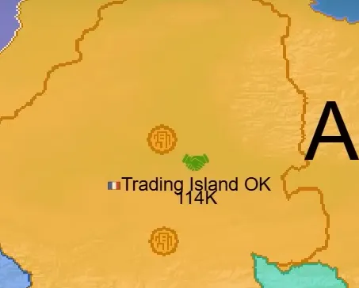

Cities Building Guide for OpenFront.io
Cities are the cornerstone building type in OpenFront.io, serving as the primary mechanism for scaling your civilization’s population capacity and military power. This comprehensive guide covers everything you need to know about building, placing, and strategically utilizing cities to dominate the map.

What Are Cities?
Cities are Economic Buildings that appear as round-shaped structures and can only be built on land. They are accessed through the build menu by right-clicking on the map and selecting the yellow wrench icon. Cities serve one fundamental purpose: increasing your maximum population by exactly 25,000 troops.
In OpenFront.io’s current meta, the game is described as “really really city-centric,” meaning that cities form the foundation of successful strategic gameplay. The difference between players with multiple cities versus those with few cities can determine the outcome of entire matches.
City Costs and Progression
Cities follow a progressive cost structure that becomes increasingly expensive with each additional city built:
| City Number | Cost |
|---|---|
| First City | 125,000 gold |
| Second City | 250,000 gold |
| Third City | 500,000 gold |
| Fourth+ Cities | 1,000,000 gold each |
This escalating cost structure means that early cities provide exceptional value, while later cities require significant gold investment. The dramatic jump from 500,000 to 1,000,000 gold makes the first three cities particularly cost-effective.
Strategic Importance and Timing
Early Game Priority
Cities should be your top priority in the early game. As one strategy guide emphasizes: “Build a city as soon as you reach 125k”. The reasoning is straightforward—cities directly translate to military power through increased population capacity.
Professional players consistently demonstrate this principle. In tutorial videos, experienced players are shown “putting down cities as quick as they can” and treating city construction as “one of the most important things in Openfront.io right now”.
Population Mechanics
Understanding population mechanics is crucial for optimal city utilization. OpenFront.io features a population growth formula that is optimized when your current population is approximately 41-42% of your maximum population capacity. This means:
- Maintaining around 40-50% population ensures maximum growth rate
- Cities increase your capacity, allowing for larger standing armies
- Higher population caps provide strategic flexibility for both expansion and defense
The maximum population formula accounts for both land controlled and cities built, with each city contributing exactly 25,000 to the capacity.
City Placement Strategy
Strategic city placement is crucial for long-term success, as poorly placed cities become vulnerable targets that enemies can capture and use against you.
Defensive Positioning
Primary placement guidelines include:
- Place in the most defensible areas of your territory
- Keep cities away from exposed coasts where naval attacks can threaten them
- Avoid placement near navigable rivers that provide enemy access routes
- Keep cities far from other nations and potential conflict zones
- Never place cities on front lines where they can be easily captured
Terrain Considerations
While the game features three terrain types—Plains, Highlands, and Mountains—cities can be built on any land terrain. However, placement should prioritize defensibility over terrain bonuses, as losing a city to an enemy provides them with significant strategic advantage.
Multiplayer Considerations
In multiplayer games, city placement becomes even more critical. Players should consider:
- Distance from human players who pose greater threats than AI
- Natural barriers that can protect city locations
- Retreat paths if territories need to be abandoned
- Clustering vs. dispersal strategies based on map layout
Advanced City Strategies
Economic Integration
Cities work synergistically with other economic buildings. Ports (which also follow a 125k/250k/500k/1M cost progression) generate trade income that can fund additional city construction. This creates a positive feedback loop where cities enable larger armies that capture more territory, generating more gold for additional cities.
Military Scaling
The 25,000 population increase per city has significant military implications. In a game where “if you’ve got a couple extra cities and your neighbor only has like two or three cities, that can make a huge difference,” this scaling advantage can determine match outcomes.
Upgrade System (Future Updates)
Recent development previews show an upcoming city upgrade system. This system will allow players to upgrade existing cities rather than building new ones, with each upgrade adding approximately 25,000 additional population capacity. Upgrades cost 1 million gold each and provide an alternative scaling path for late-game development.
Common Mistakes and Best Practices
Early Game Errors
- Delaying first city construction beyond 125k gold accumulation
- Building other structures before securing first city
- Poor initial placement in exposed or vulnerable locations
Strategic Best Practices
- Prioritize cities over all other buildings in early expansion phases
- Plan city networks that can provide mutual defensive support
- Consider long-term territorial goals when placing cities
- Balance city investment with immediate military needs
Advanced Techniques
- City clustering for concentrated defensive power
- Strategic spacing to cover maximum territorial control
- Economic timing to optimize gold flow for continuous city construction
Integration with Overall Strategy
Cities form the foundation of several key strategic elements in OpenFront.io:
Population Management: Cities enable the optimal 40-50% population ratio that maximizes growth while maintaining offensive capability.
Territorial Control: Higher population caps allow for larger armies that can capture and hold more territory, creating a positive expansion cycle.
Economic Development: Cities support the gold generation needed for late-game technologies like missile silos, SAM launchers, and nuclear weapons.
Diplomatic Leverage: Players with superior city infrastructure can negotiate from positions of strength, as their population advantage translates to military superiority.
Cities represent the most fundamental building type in OpenFront.io, serving as the bedrock upon which all successful strategies are built. Mastering city construction timing, placement, and integration with other game mechanics is essential for achieving territorial domination and victory. The game’s city-centric design means that players who understand and optimize their city networks will consistently outperform those who neglect this crucial aspect of development.